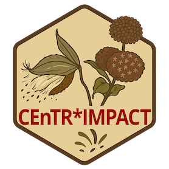
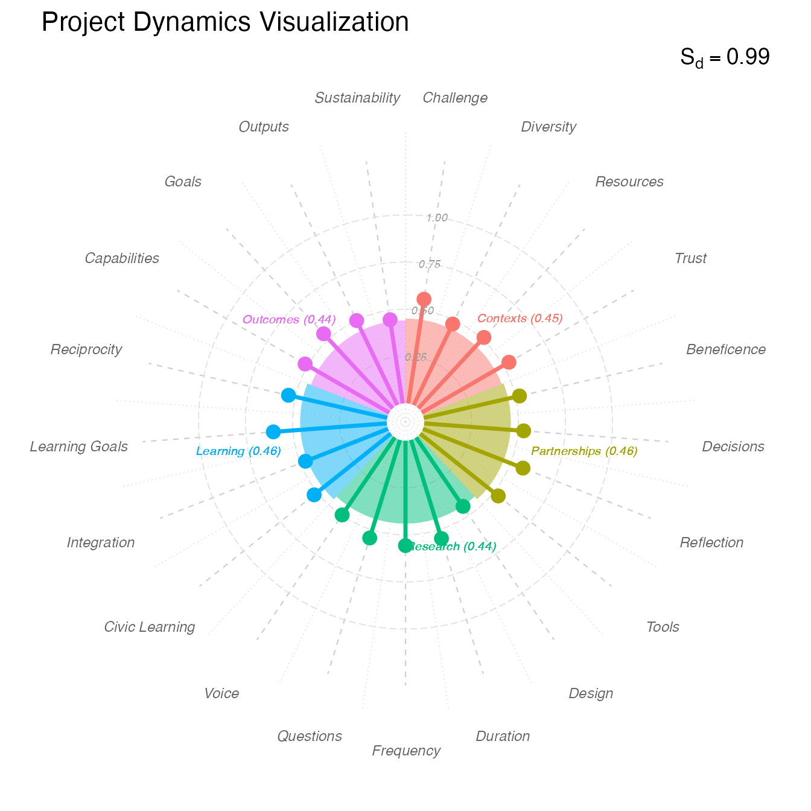

Interpreting Project Dynamics Scores
Source:vignettes/interpreting_Sd.Rmd
interpreting_Sd.RmdWhat Are Project Dynamics?
The Project Dynamics Score (Sd) provides insight into how your project is being carried out across five key domains derived from the Community-Based Participatory Research (CBPR) framework. It answers the question: “How balanced is our attention across the essential dimensions of community-engaged work?”
Unlike metrics that measure “more is better,” Project Dynamics measures balance. A project that excels in research design but neglects partnership processes, or emphasizes outputs while ignoring capacity-building, demonstrates poor dynamics even if some areas are strong. Transformative community-engaged research requires attention across all domains.
Why Balance Matters
The Priority Mapping process that informed CEnTR*IMPACT revealed that community-engaged scholars value shared decision-making, purposeful approaches, and co-constructed infrastructure alongside research rigor. Simply producing many outputs or serving many people isn’t enough if the processes are extractive or if community priorities are ignored.
Balance in Project Dynamics indicates: - Holistic rather than narrow approach - Sustainable rather than transactional relationships - Mutual transformation rather than one-sided benefit - Integration across research, practice, and learning
Projects with poor balance often: - Overemphasize one domain at expense of others - Neglect foundation-building (Contexts, Partnerships) - Focus on Outcomes without nurturing processes - Separate research from relationship-building
The Five Domains
Project Dynamics is organized around five domains derived from the CBPR framework, with an optional domain for projects incorporating engaged learning:
1. Contexts
What it measures: Where and how the project started
Dimensions: - Challenge Origin: Who identified the problem—researchers, community, or collaborative? - Diversity: Representation and overlapping identities between team and community - Resources: Who contributes what assets and how decisions about resources are made - Trust: History of collaboration or mistrust, and trust-building efforts
Why it matters: Context shapes everything that follows. Projects built on community-identified challenges with diverse teams and established trust start from stronger foundations than those imposed by researchers onto communities with fraught histories.
2. Partnerships
What it measures: How researchers and community members work together
Dimensions: - Decision-Making: Processes for making choices and who has voice - Reflection: Intentional activities for learning and adjustment - Tool Construction: Co-creation of infrastructure (protocols, agreements, processes) - Beneficence: Ensuring both researchers and community benefit
Why it matters: Partnership quality predicts project sustainability. Partnerships with clear decision-making, regular reflection, co-constructed infrastructure, and mutual benefit are transformational; those lacking these elements risk becoming transactional or extractive.
3. Research & Interventions
What it measures: How research and community interventions are designed and conducted
Dimensions: - Research Questions: Who develops the questions and how they align with community priorities - Design & Facilitation: Co-creation of research methods and intervention activities - Duration: Length of engagement (one-time vs. sustained) - Frequency: How often engagement occurs - Voice: Whose language, culture, and perspectives center the work
Why it matters: Research that genuinely engages community members in question development and design produces more relevant knowledge and builds greater capacity. Sustained, frequent engagement with community-centered approaches differs fundamentally from one-time, researcher-designed studies using academic language.
4. Engaged Learning (when applicable)
What it measures: Integration of students and educational goals into community work
Dimensions: - Civic Learning: Opportunities for students to develop civic consciousness - Integration: How student work connects to broader research and benefits community - Learning Goals: Depth of reflection and connection-making for students - Reciprocity: Collaboration ensuring community benefit alongside student learning
Why it matters: When done well, engaged learning amplifies community-engaged research by building capacity among future practitioners, providing labor for community initiatives, and fostering lifelong civic commitment. Done poorly, it treats communities as laboratories, adding burden without benefit.
5. Outcomes
What it measures: Results and sustainability
Dimensions: - Capacities & Capabilities Strengthened: Enhanced community wellbeing, agency, trust, and cohesion - Goals Met: Degree to which community vs. researcher goals were achieved - Outputs Delivered: Types of products created and who they serve - Sustainability: Infrastructure and relationships for continued work
Why it matters: True impact includes capacity-building and sustainable change, not just deliverables. Projects that strengthen community capabilities, prioritize community goals, produce community-facing outputs, and build lasting infrastructure create transformation that endures.
Understanding the Overall Dynamics Score
How It’s Calculated
The overall Project Dynamics Score (Sd) uses the complement of the Gini coefficient (Gc) applied to domain scores. The Gini coefficient measures inequality; its complement measures balance.
Within each domain: 1. Descriptors are selected and ranked by relevance/importance 2. Descriptor values calculated using assigned weights × ranking weights 3. Dimension scores computed as weighted means 4. Domain scores derived as geometric means of dimension scores 5. Overall Sd calculated from balance across domain scores
This multi-level calculation ensures that: - Only relevant descriptors contribute to scores - More important descriptors carry more weight - Balance is measured across domains - You’re not penalized for incomplete descriptor selection
Interpretation Guidelines
| Sd Range | Interpretation | What This Means |
|---|---|---|
| < 0.50 | Very Low Balance | Highly uneven development across domains |
| 0.50 - 0.59 | Low Balance | Significant imbalance requiring attention |
| 0.60 - 0.69 | Moderate Balance | Reasonable distribution with some gaps |
| 0.70 - 0.79 | High Balance | Strong balance with minor variations |
| ≥ 0.80 | Very High Balance | Excellent balance across domains |
Critical insight: High balance with low absolute domain scores indicates even but shallow development. Moderate balance with high absolute scores may indicate intentional, stage-appropriate focus. Always examine both balance and absolute levels.
Example: Interpreting Your Dynamics Score
Let’s work through the example from the Getting Started vignette:
# Generate example data
dynamics_data <- generate_dynamics_data(seed = 36)
# Analyze dynamics
dynamics_results <- analyze_dynamics(dynamics_data)
# View overall score
print(dynamics_results$dynamics_score)
#> [1] 0.9893333What Sd = 0.99 Tells Us
A Project Dynamics Score of 0.99 indicates very high balance—remarkably even attention across all domains. The domain scores cluster tightly, showing no single area dominates at expense of others. This is the balanced approach community-engaged research requires.
However, balance alone doesn’t tell the full story. Let’s examine the domain scores:
# View domain scores
print(dynamics_results$domain_df)
#> # A tibble: 5 × 2
#> domain domain_score
#> <ord> <dbl>
#> 1 Contexts 0.45
#> 2 Partnerships 0.46
#> 3 Research 0.44
#> 4 Learning 0.46
#> 5 Outcomes 0.44Interpreting Domain-Level Scores
Contexts (0.45)
Contexts: 0.45Interpretation: Moderate strength in foundational elements. This domain examines how the project started—challenge origin, diversity, resources, and trust.
What 0.45 means: - Typical for emerging partnerships or early-stage projects - Foundation established but room to deepen - Some elements strong (e.g., diversity), others developing (e.g., trust)
Common patterns at this level: - Challenge co-identified by researchers and community but not fully community-driven - Some identity overlaps between team and community but gaps remain - Resources contributed by both parties but allocation decisions not fully shared - Trust building in progress, especially if histories of mistrust exist
Questions to explore: - Was the challenge genuinely community-identified or researcher-interpreted? - Do underrepresented identities have voice in decision-making, not just participation? - How transparent and collaborative are resource allocation decisions? - What ongoing trust-building activities are in place?
Partnerships (0.46)
Partnerships: 0.46Interpretation: Moderate partnership development with room for deepening collaborative processes.
What 0.46 means: - Partnership structures exist but may not be fully mature - Some dimensions stronger than others - Likely in process of building more robust collaboration
Common patterns at this level: - Decision-making processes established but may not fully incorporate partner voice - Some reflection activities but not yet systematic or deeply integrated - Beginning to co-create infrastructure but tools may still be researcher-designed - Mutual benefit acknowledged but not yet fully realized
Questions to explore: - Do partners genuinely shape decisions or just provide input? - How regular and structured are reflection activities? - Were accountability tools co-created or adopted from researcher practices? - Can partners articulate how they benefit beyond receiving services?
Research & Interventions (0.44)
Research: 0.44Interpretation: Research and intervention design showing moderate community engagement. Slightly lower than Contexts and Partnerships, suggesting this is an area for growth.
What 0.44 means: - Community involved in some aspects of research but not full co-design - Likely in early data collection phases or planning stages - Balance between researcher expertise and community priorities developing
Common patterns at this level: - Research questions informed by but not fully co-developed with community - Community input on methods but researchers leading design - Sustained engagement (not one-time) but frequency could increase - Some community-centered practices but academic approaches still dominant
Questions to explore: - Did community partners help formulate research questions? - What role do partners play in data collection and analysis? - How frequently does engagement occur? Is it sufficient for relationship depth? - Whose language, frameworks, and perspectives center the work?
Why it may be lower: Research design often requires specialized expertise, creating natural tension between researcher leadership and community co-creation. This is an expected challenge to work through, not a failure.
Engaged Learning (0.58)
Learning: 0.58Interpretation: Strongest domain in this project, indicating well-integrated engaged learning component. Notably higher than other domains, this may reflect the project’s nature as scholarship of engagement and teaching.
What 0.58 means: - Intentional integration of educational goals with community work - Students contributing meaningfully while learning - Reciprocity considerations in place - Civic learning outcomes designed into the experience
Common patterns at this level: - Civic learning expectations in syllabi and assessed throughout - Student activities designed to benefit community, not just provide experience - Community partners involved in shaping student roles - Reflection activities helping students connect experience to broader context
Why it may be higher: If this is a scholarship of teaching and engagement project, the elevated Learning domain makes sense. This shows strength being leveraged—consider how learning integration could model approaches for strengthening other domains.
Outcomes (0.44)
Outcomes: 0.44Interpretation: Moderate outcome development. Lower score common for projects not yet at completion, indicating this is likely an early-to-mid stage project.
What 0.44 means: - Some deliverables produced but major outcomes still developing - Early capacity-building occurring but full impact not yet realized - Sustainability infrastructure beginning to form
Common patterns at this level: - Mix of academic and community-facing outputs, ratio still evolving - Some agreed-upon outcomes met, others in progress - Community capacity strengthened in some areas but unevenly - Sustainability plans discussed but not fully implemented
Questions to explore: - Are outputs prioritized to meet community needs or researcher requirements? - Which goals (community vs. researcher) are being met first? - What specific capacities have been strengthened in the community? - What infrastructure ensures work continues beyond current funding?
Why it may be lower: Outcomes naturally lag other domains—you must establish context, build partnerships, and conduct research before substantial outcomes emerge. Lower Outcomes scores early in projects are expected and appropriate.
Visualizing Project Dynamics
# Create rose diagram
plot_dynamics <- visualize_dynamics(dynamics_results)
print(plot_dynamics)
Reading the Rose Diagram
The rose diagram (inspired by Florence Nightingale’s pioneering visualizations) reveals domain balance at a glance:
Elements: - Petals: Five “petals” representing the five domains - Petal length: Length represents domain score (longer = higher) - Stamens: Overlaid lines showing dimension scores within each domain - Overall shape: Symmetry indicates balance; irregularity shows imbalance
Visual patterns:
- Pentagon shape (like our example): High balance, all domains relatively equal
- Star with one long ray: One domain overemphasized
- Irregular shape: Uneven development across domains
- Small, uniform pentagon: Balanced but all domains need deepening
- Large, irregular shape: Strong in some areas, weak in others
Stamen analysis: - Consistent stamen lengths: Even dimension development within domain - One long stamen: Single dimension carrying the domain score - Short stamens: All dimensions within domain need work
What Different Dynamics Patterns Mean
Pattern 1: High Balance, Moderate Absolute Scores
Example: Sd = 0.92, all domains 0.44-0.46Interpretation: This is our example pattern. Very balanced approach but moderate strength across the board. Likely indicates: - Early-stage project building balanced foundation - Intentional comprehensive approach rather than narrow focus - Room for all domains to deepen as project matures
Strengths: - Avoiding common trap of overemphasizing research at expense of relationships - Holistic approach supports sustainable development - No domain being neglected
Opportunities: - All domains can strengthen as project progresses - Use balanced foundation to build deeper capacity - Track domain score growth over time
Actions: - Celebrate balanced approach while planning deepening strategies - Identify 1-2 dimensions within each domain for intentional focus - Leverage strong Engaged Learning to model practices for other domains
Pattern 2: Research/Outcomes Emphasis
Example: Sd = 0.65, Research 0.75, Outcomes 0.70, Contexts 0.45, Partnerships 0.40Interpretation: Traditional academic orientation prioritizing research activities and measurable outcomes over relationship-building and context attention.
Why it happens: - Researchers’ training emphasizes methodology and deliverables - Institutional incentives reward outputs over processes - Funders demand measurable outcomes - Urgency to “get work done” overshadows foundation-building
Risks: - Weak partnerships may not sustain beyond funding - Poor context attention leads to misaligned interventions - Research results may not translate to community benefit - Transactional rather than transformational relationships
Actions: - Slow down to strengthen Contexts and Partnerships - Reassess whether research questions truly reflect community priorities - Invest in relationship-building activities - Co-create partnership infrastructure and decision-making processes
Pattern 3: Partnership Emphasis, Research Lag
Example: Sd = 0.62, Partnerships 0.80, Contexts 0.75, Research 0.45, Outcomes 0.40Interpretation: Strong relationships and context awareness but slower research progress. Common in first year of community-university partnerships or when rebuilding trust after past harms.
Why it happens: - Intentional investment in relationship-building before research - Community partners setting pace for research engagement - Time needed for co-design of research approaches - Healing past damages before moving forward
This is often appropriate, not problematic: - Strong partnerships are prerequisite for meaningful research - Community-set timelines more important than researcher urgency - Rushing research risks repeating extractive patterns
Actions: - Honor the relationship-building process - When community ready, transition to collaborative research design - Use strong partnerships to ensure research truly serves community - Don’t interpret “slow” research as failure
Pattern 4: Uneven Dimension Development
Example: Domain score 0.50 but one dimension 0.80, others 0.30-0.40Interpretation: Single dimension carrying domain score while others lag. Imbalanced approach within domain.
Why it happens: - Focusing on easiest or most comfortable dimension - One dimension naturally more developed given project type - Other dimensions not recognized as important - Lack of attention to comprehensive domain development
How to identify: Examine the dimension-level data in
dynamics_results$dynamics_df
Actions: - Review all dimensions within low-performing domains - Identify which dimensions need attention - Develop targeted strategies for neglected dimensions - Ensure comprehensive rather than selective domain development
Pattern 5: Engaged Learning Absent or Inflated
If your project doesn’t include engaged learning, this domain won’t appear. If it does but scores dramatically higher (>0.20) than other domains:
Interpretation: Student involvement may be better integrated than other aspects, or you’re giving students too much responsibility relative to partnership development.
Positive interpretation: - Learning integration done well, model for other domains - Educational partnerships may be easier to establish than research partnerships - Students providing valuable labor while gaining experience
Concerning interpretation: - Over-reliance on student labor without adequate oversight - Students exposed to community without sufficient preparation - Community bearing teaching burden alongside research participation
Actions: - Assess whether student-community interactions are mutually beneficial - Ensure community partners shape student roles - Use successful learning integration to improve research integration - Protect community from excessive student turnover burden
Interpreting Dynamics by Project Stage
Early Stage (Months 0-12)
Expected patterns: - Contexts and Partnerships leading (0.50-0.70) - Research moderate (0.40-0.60) - Outcomes lower (0.30-0.50) - High balance (Sd > 0.80) as foundation built
Appropriate focus: Context assessment, partnership infrastructure, trust-building, research co-design
Red flags: - High Research/Outcomes with low Contexts/Partnerships (rushing) - Very low Contexts (<0.30) suggesting insufficient foundation - Low balance (Sd < 0.60) indicating neglect of key domains
Mid-Stage (Months 12-36)
Expected patterns: - All domains strengthening - Research catching up (0.60-0.80) - Outcomes emerging (0.50-0.70) - Sustained high balance (Sd > 0.75)
Appropriate focus: Active research/interventions, iterative reflection, mid-course corrections, early outcome documentation
Red flags: - Declining Partnerships (relationship erosion) - Stagnant Research (not translating relationships into inquiry) - Decreasing balance (domain divergence)
Late Stage (Months 36+)
Expected patterns: - Strong scores across all domains (0.60-0.80+) - Outcomes catching up (0.70-0.90) - High balance maintained (Sd > 0.75) - Sustainability elements prominent
Appropriate focus: Outcome documentation, sustainability planning, capacity for continued work, knowledge dissemination
Red flags: - Low Outcomes at this stage (impact not materializing) - Declining Contexts/Partnerships (relationships fraying) - Low sustainability dimension scores (work won’t continue)
Using Dimension-Level Data for Action Planning
The dimension scores reveal where to focus within each domain:
# View dimension details
head(dynamics_results$dynamics_df, 10)
#> # A tibble: 10 × 7
#> domain dimension salience weight dimension_value dimension_score domain_score
#> <chr> <chr> <dbl> <dbl> <dbl> <dbl> <dbl>
#> 1 Conte… Challenge 0.2 0.78 0.156 0.47 0.45
#> 2 Conte… Challenge 0.8 0.84 0.672 0.47 0.45
#> 3 Conte… Challenge 0.6 0.95 0.57 0.47 0.45
#> 4 Conte… Challenge 0.4 1 0.4 0.47 0.45
#> 5 Conte… Challenge 1 1 1 0.47 0.45
#> 6 Conte… Diversity 0.4 0.84 0.336 0.42 0.45
#> 7 Conte… Diversity 0.2 0.9 0.18 0.42 0.45
#> 8 Conte… Diversity 0.6 0.78 0.468 0.42 0.45
#> 9 Conte… Diversity 1 0.78 0.78 0.42 0.45
#> 10 Conte… Diversity 0.8 0.78 0.624 0.42 0.45Analyzing Dimension Patterns
Within Contexts domain, examine: - Challenge Origin: Community-identified challenges score higher than researcher-identified - Diversity: Identity overlaps and underrepresented group inclusion boost scores - Resources: Shared resource decisions outweigh resource quantity - Trust: Building on established trust scores higher than working despite mistrust
Within Partnerships domain, examine: - Decision-Making: Clear processes with community voice score highest - Reflection: Collaborative, structured reflection outweighs researcher-only reflection - Tool Construction: Community contribution to infrastructure beats efficiency tools - Beneficence: Mutual benefit and community cultural wealth emphasis score highest
Within Research domain, examine: - Research Questions: Community co-development scores much higher than researcher-generated - Design & Facilitation: Community contribution to methods matters more than researcher efficiency - Duration/Frequency: Sustained, frequent engagement scores higher than one-time - Voice: Community-centered language/culture highest; academic language lowest
Within Outcomes domain, examine: - Capacities Strengthened: Community agency and cohesion score highest - Goals Met: Community goal achievement valued over researcher goal achievement - Outputs: Community-facing products to broader audiences score higher than academic products - Sustainability: Concrete strategies and infrastructure score higher than goodwill
Taking Action Based on Dynamics Scores
Step 1: Identify Domain Priorities
Look for: - Domains scoring <0.50 (need significant attention) - Domains lagging others by >0.20 (creating imbalance) - Domains inappropriately low for project stage
Step 2: Drill Down to Dimensions
Within priority domains, identify which dimensions drag the score down. Use the descriptor-level data to see specifically what’s missing.
Step 3: Develop Targeted Strategies
| Domain | Low Score Cause | Sample Actions |
|---|---|---|
| Contexts | Researcher-identified challenge | Host community listening sessions to reframe problem |
| Limited diversity | Intentional outreach to underrepresented groups | |
| Unclear resource sharing | Transparent budget meeting, co-create allocation process | |
| Trust-building needed | Acknowledge past harms, consistent follow-through | |
| Partnerships | Unclear decision-making | Document decision process, create partnership agreement |
| No structured reflection | Schedule quarterly reflection sessions with all parties | |
| Researcher-designed tools | Co-create accountability structures and protocols | |
| Unclear benefits | Articulate and track mutual benefit for all parties | |
| Research | Researcher-generated questions | Research design co-lab with community members |
| Limited community design input | Share methodological options, collaborate on approach selection | |
| Infrequent engagement | Increase meeting frequency, create ongoing communication | |
| Academic language dominance | Translate materials, center community frameworks | |
| Learning | No civic learning component | Add reflection prompts connecting experience to civic responsibility |
| Poor integration | Ensure student work genuinely benefits community | |
| Limited community input | Include partners in designing student roles and supervision | |
| One-way benefit | Build reciprocity explicitly into learning experiences | |
| Outcomes | Few deliverables | Accelerate co-created product development |
| Researcher goals prioritized | Reassess priorities, center community-defined success | |
| Academic outputs dominate | Shift ratio toward community-facing products | |
| No sustainability plan | Develop concrete continuation strategies |
Step 4: Monitor Progress
- Reassess dynamics at regular intervals (every 6-12 months)
- Track domain score trajectories:
- Improving scores = strategies working
- Stagnant scores = need different approach
- Declining scores = warning signs requiring intervention
- Maintain balance while strengthening absolute levels
Step 5: Use Dynamics for Self-Reflection
Project Dynamics scores are excellent prompts for team reflection:
- “Why is our Partnerships score higher than Research? What does that tell us?”
- “Learning is our strongest domain—what can we learn from those practices?”
- “Our Outcomes are lower than expected—what barriers exist?”
- “Why has Contexts remained flat while other domains grew?”
Common Dynamics Misinterpretations
Mistake 1: “Perfect balance means perfect project”
High balance (Sd > 0.90) with low absolute scores (all domains < 0.40) indicates balanced mediocrity, not excellence. Focus on both balance AND strength.
Mistake 2: “Low balance means failure”
Strategic imbalance may be appropriate. Early projects naturally emphasize Contexts/Partnerships over Outcomes. Phase-appropriate imbalance isn’t problematic.
Mistake 3: “Higher domain scores are always better”
Prematurely high Outcomes (0.80 in Month 3) signals inflated expectations rather than genuine achievement. Context matters.
Mistake 4: “We should work on all domains equally”
Focus on 1-2 priority domains at a time. Trying to improve everything simultaneously overwhelms teams.
Mistake 5: “The score is the story”
Dynamics scores are entry points for conversation, not conclusions. The qualitative “why” behind scores matters more than numbers alone.
Communicating About Dynamics
With Community Partners
Use the rose diagram: Visual makes patterns immediately clear
Frame developmentally: “We’re building a strong foundation across all areas. As we move forward, we’ll see all these petals grow.”
Invite interpretation: “What do you notice in this visualization? Does it match your experience?”
Co-plan actions: “Which area should we focus on strengthening next?”
With Research Team
Prompt reflection: “Why is X domain lower? What does that reveal about our practices?”
Challenge assumptions: “We rated Empowerment higher than partners did—what might that gap mean?”
Identify patterns: “All our low dimensions involve community co-creation—what systemic barrier are we facing?”
Commit to changes: “Based on these patterns, what specific practices will we change?”
For Evaluation/Reporting
Show trajectory: Include multiple time points if available
Explain balance: “High balance indicates comprehensive attention to all aspects of community-engaged work”
Connect to CBPR: “These domains reflect established CBPR principles”
Acknowledge limitations: “While showing strong balance, absolute scores indicate room for growth as project matures”
For Promotion/Tenure
Demonstrate sophistication: Dynamics analysis shows understanding of multi-dimensional community-engaged scholarship
Show intentionality: “We deliberately focused on Partnerships early, leading to stronger Research co-design”
Document growth: Show score improvements reflecting responsive practice
Use dimension detail: Specific practices (co-created research questions, structured reflection) demonstrate quality
Conclusion
Project Dynamics scores illuminate how comprehensively and thoughtfully you’re approaching community-engaged scholarship. Key takeaways:
- Balance matters as much as absolute strength—avoid narrow focus
- Domain scores reveal priorities and gaps that may be invisible otherwise
- Dimension detail enables targeted improvement rather than vague “do better”
- Appropriate patterns vary by project stage—compare to stage-relevant expectations
- High dynamics reflect CBPR principles of collaboration, mutual benefit, and community agency
- Dynamics scores prompt essential self-reflection about partnership quality and impact
When used alongside Alignment and Cascade scores within the CEnTR*IMPACT framework, Project Dynamics helps ensure your community-engaged work is balanced, comprehensive, and grounded in the principles that lead to genuine transformation for both researchers and communities.
References
Price, J. F. (2024). CEnTRIMPACT: Community Engaged and Transformative Research – Inclusive Measurement of Projects & Community Transformation* (CUMU-Collaboratory Fellowship Report). Coalition of Urban and Metropolitan Universities.
Wallerstein, N., & Duran, B. (2010). Community-Based Participatory Research Contributions to Intervention Research: The Intersection of Science and Practice to Improve Health Equity. American Journal of Public Health, 100(S1), S40-S46.
Wallerstein, N., Oetzel, J. G., Sanchez-Youngman, S., Boursaw, B., Dickson, E., Kastelic, S., Koegel, P., Lucero, J. E., Magarati, M., Ortiz, K., Parker, M., Peña, J., Richmond, A., & Duran, B. (2020). Engage for Equity: A Long-Term Study of Community-Based Participatory Research and Community-Engaged Research Practices and Outcomes. Health Education & Behavior, 47(3), 380-390.